Gjenbrukssentralen
04Ombygging og ombruk
Næring · kontor · Ombruk · transformasjonSe bildegalleri
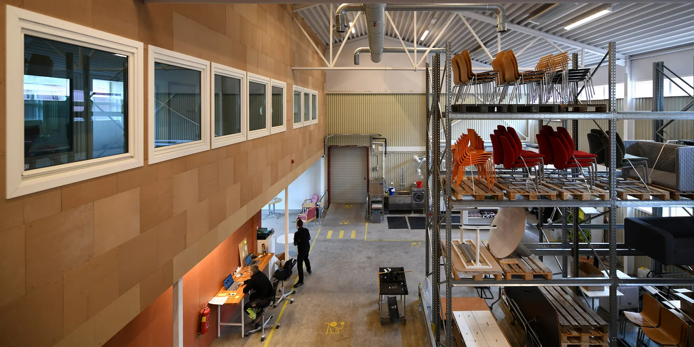
- Byggherre
- Trondheim Eiendom
- Byggeår
- 2024
- Medarbeidere
- Thov Ø. Sanden, Heidi Hynne, Rita Morken
Om prosjektet
En tidligere møbelbutikk i Granåsen er omarbeidet til kommunalt gjenbrukslager og aktivitetssenter. Planleggingen samler lager, reparasjon, vask og arbeidsplasser, med omfattende ombruk av materialer fra eksisterende bygg.
Bilder & tegninger11 bilder


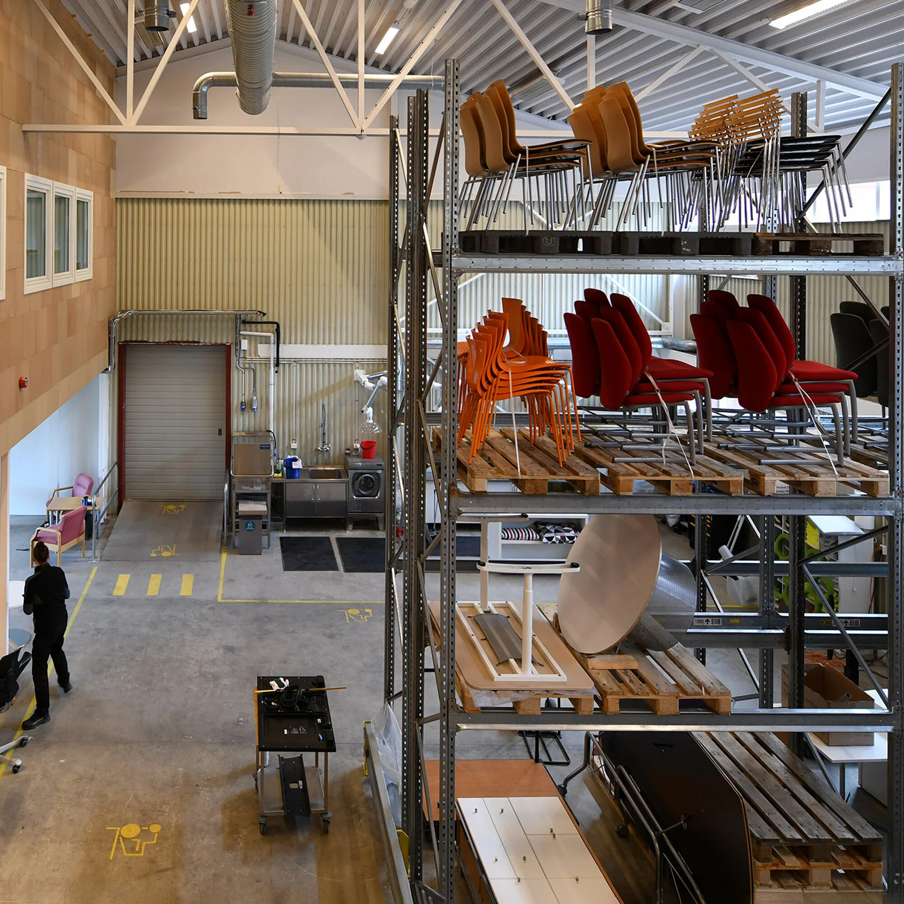
Forstørr
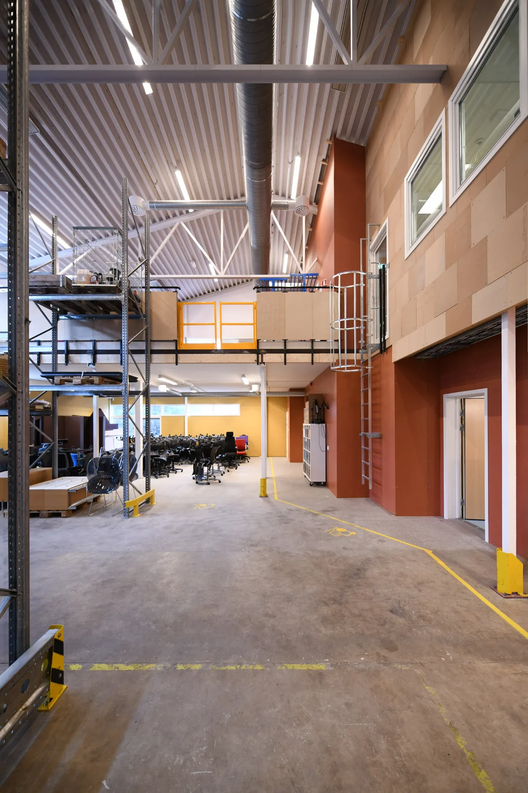
Forstørr
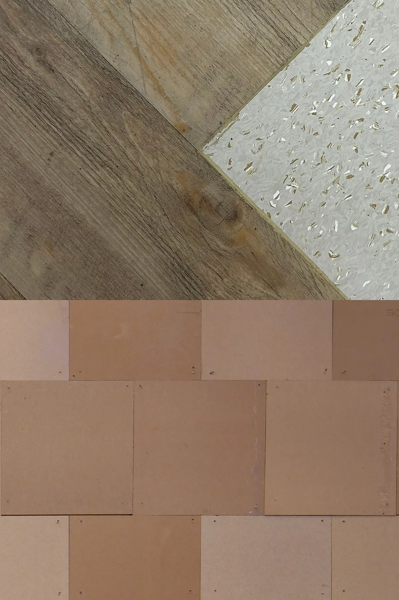
Forstørr
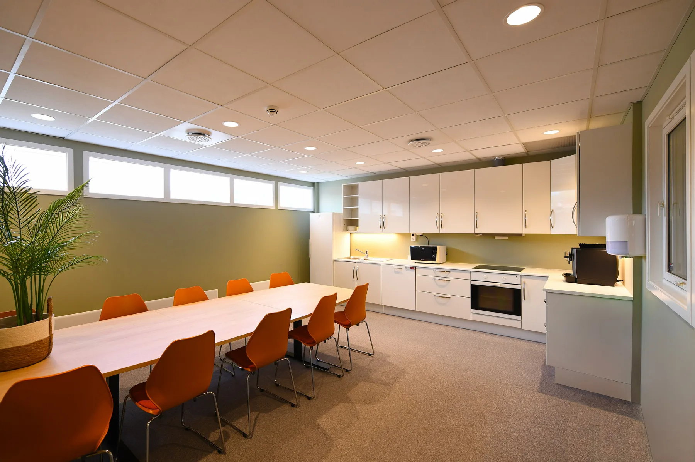
Forstørr
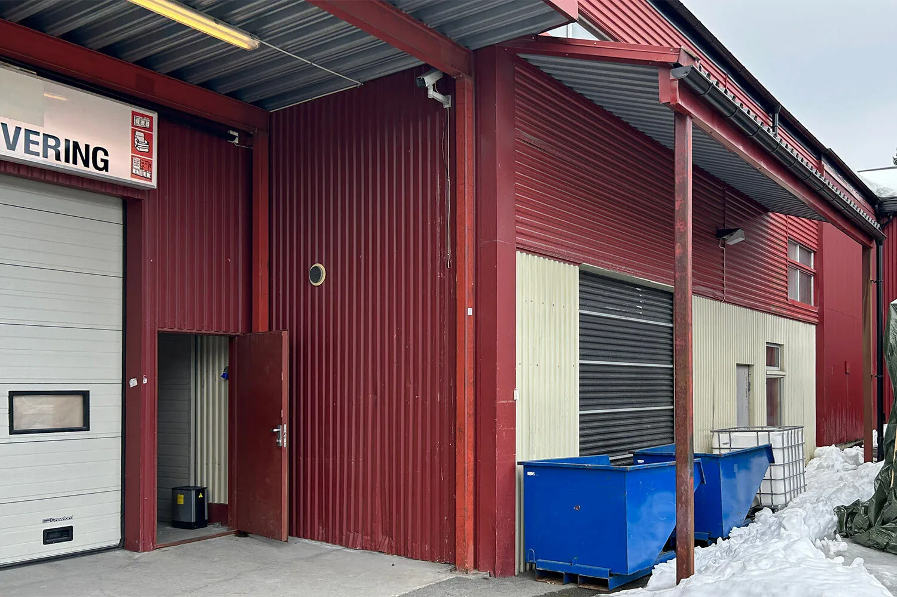
Forstørr
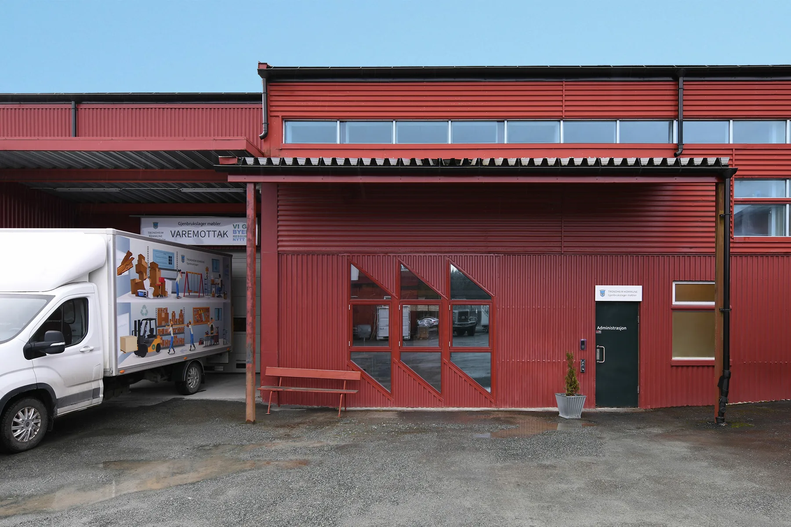
Forstørr
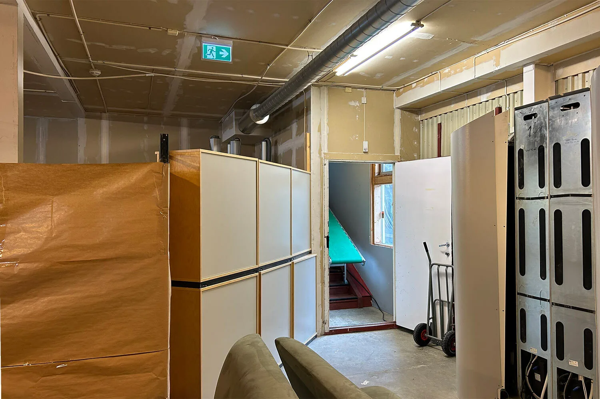
Forstørr
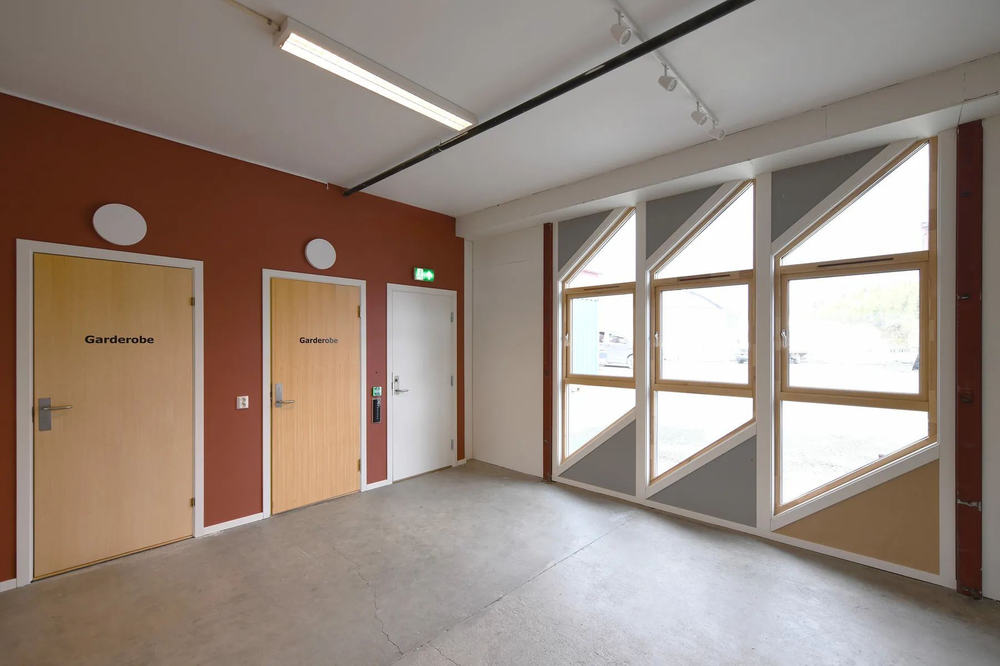
Forstørr
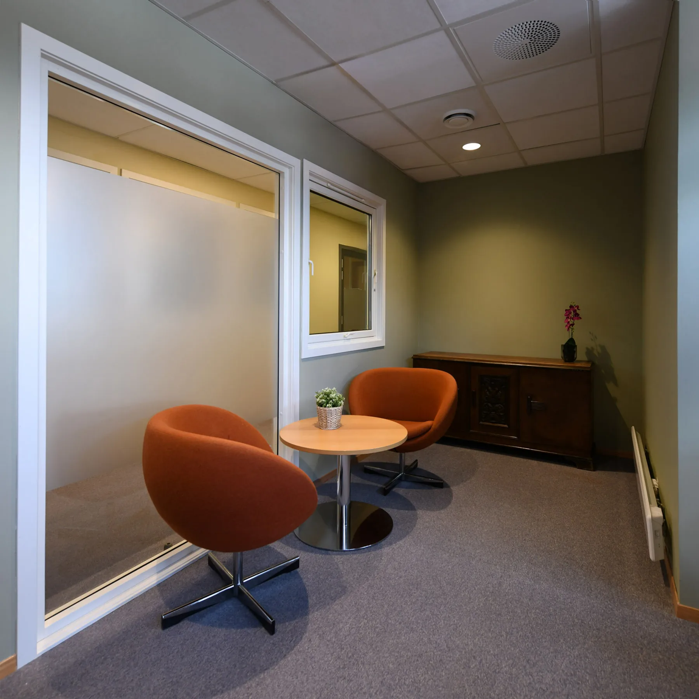
Forstørr
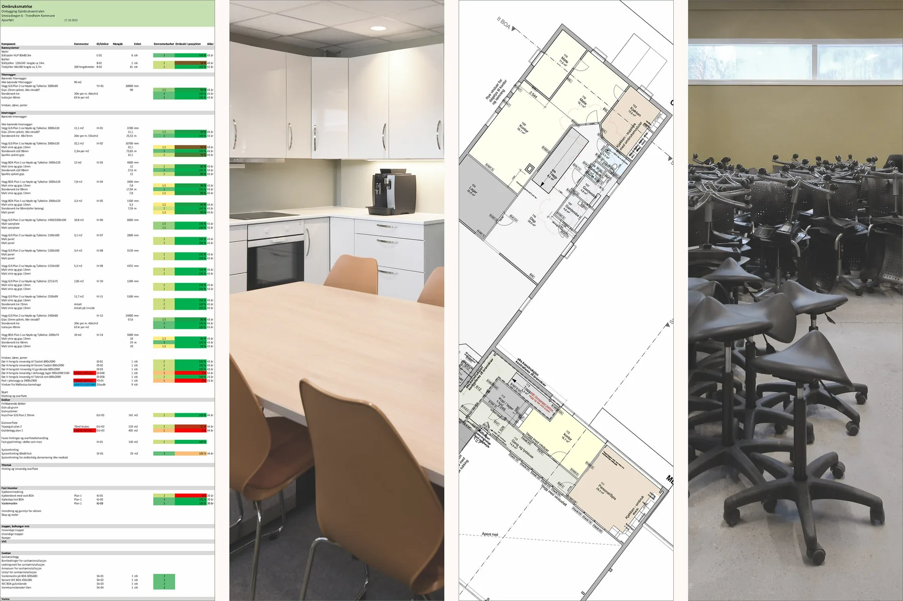
ForstørrLa oss begynne med en samtale